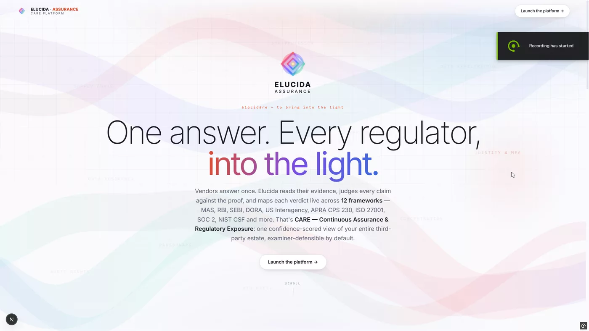

Prove it to regulators.
Vendors answer once. Elucida Verify reads their evidence, judges every claim against the proof, and auto-maps each verdict across 12 security & regulatory frameworks in real time — examiner-defensible by default.
CARE — Continuous Assurance & Regulatory Exposure — the split cockpit built for banks and regulated entities.
Incumbents auto-fill questionnaires.
Elucida judges claim vs. proof.
Every verdict is defensible
Each judgment traces claim → the exact source span in the vendor's document → control → regulation clause → rationale → calibrated confidence. It requires a verified citation for every "Compliant" — and abstains rather than guessing.
- Verified citations: hybrid BM25 + local ONNX embeddings; each quote checked to occur in the evidence and to entail the claim (NLI)
- Kills hallucinated citations mechanically, not by trust
- Governance: every adjudication audit-logged with model/prompt/retrieval provenance (SR 11-7-aligned)

Clause-to-clause crosswalk
One evidence set is crosswalked across APAC regulators (MAS, RBI, SEBI), Western (DORA, US Interagency, APRA) and global standards (ISO 27001, SOC 2, NIST CSF, PCI DSS, GDPR, DPDP) — every control carrying explicit clause mappings, not just a shared tag.
- One questionnaire (54 controls, 14 domains) answers them all — scope any subset at onboarding
- Continuous re-adjudication: re-judges on new evidence, flags drift between attested and proven
- Fourth-party concentration: shared subprocessors as single points of failure (DORA Art. 28-30)
The major kit
Elucida Verify
Decomposes each control RFI into atomic sub-claims, grounds the verdict on retrieved evidence, and abstains on insufficient proof.
12-framework crosswalk
290+ real clauses over a canonical 14-domain spine; coverage for each framework derived automatically via the Coverage lens.
Split cockpit
A full-bleed three-pane workspace (navigator · adjudication · evidence) with "Ask CARE" in-context, no page reloads.
AI autofill + SIG/CAIQ
Upload a scope sheet or MSA to pre-fill onboarding; import existing SIG/CAIQ answers; export a shareable trust profile.
Examiner-defensible reports
Per-vendor PDF + Excel with scope, per-control verdicts, evidence, overrides, consolidated rating and approval authority.
Cost-aware processing
From $0 deterministic rules → local models → hybrid → full cloud AI. Escalate only the ambiguous cases.